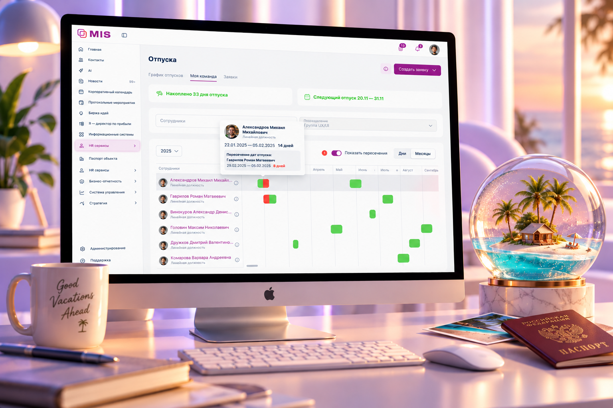
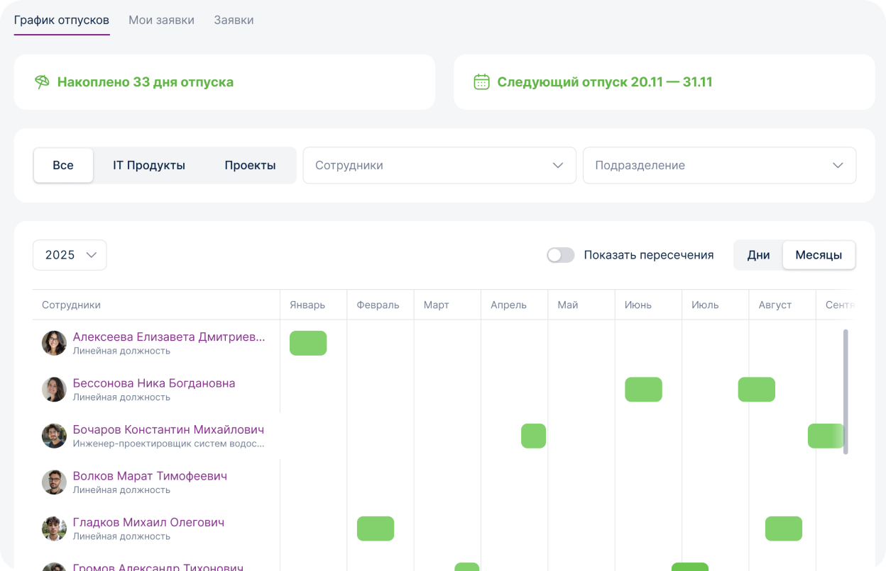
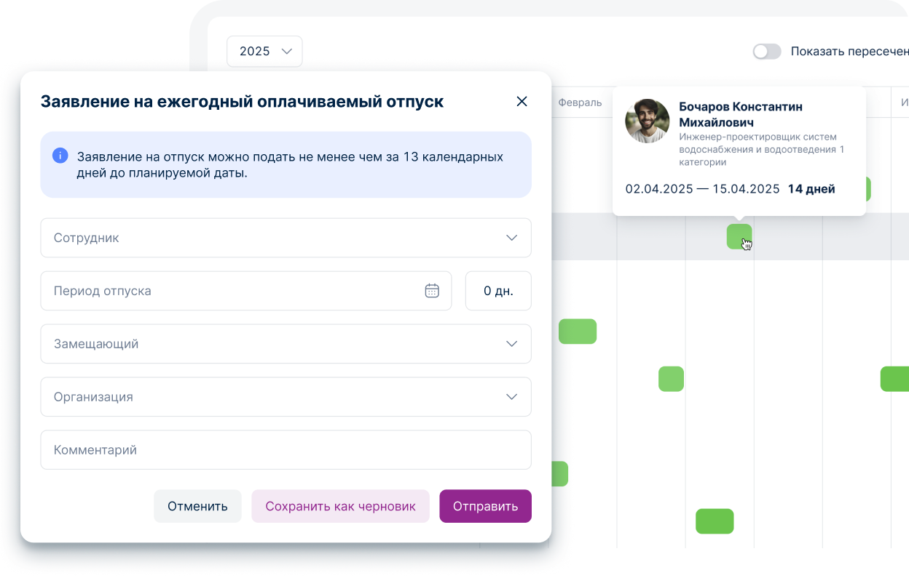
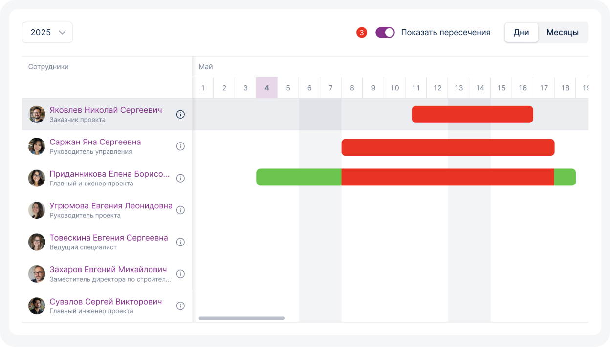
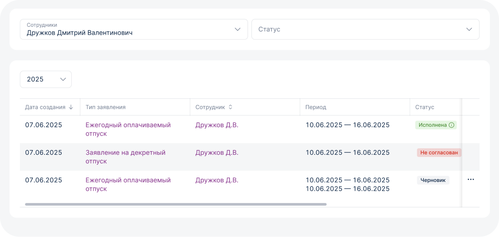
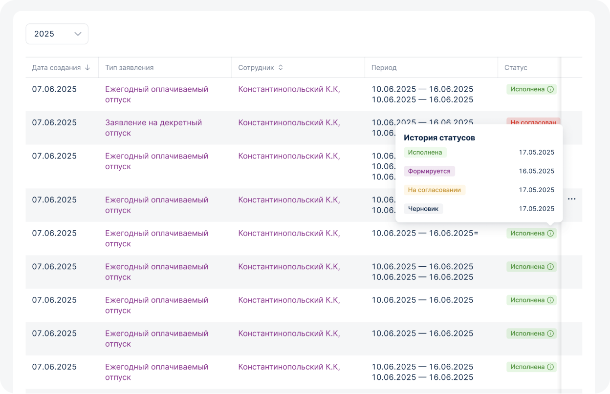
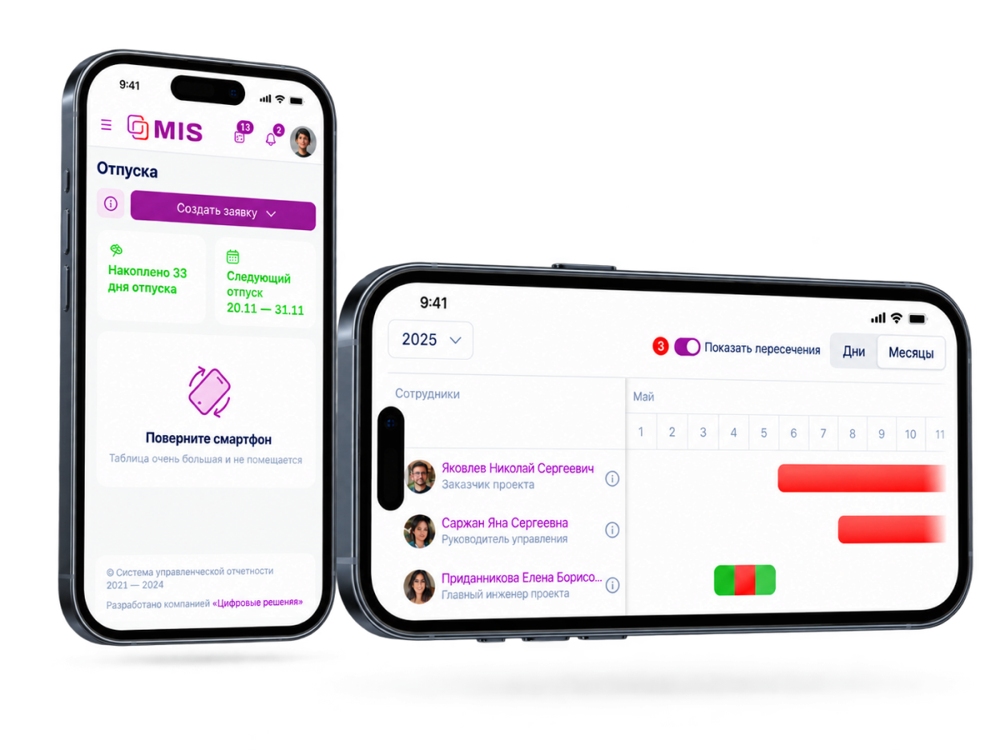
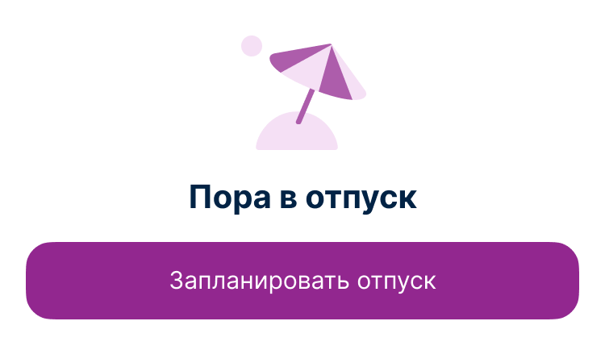

06
Отпуска — сервис
планирования
отпусков
Сервис для планирования отпусков сотрудников и команд: календарь, пересечения, статусы согласования и мобильные сценарии в едином интерфейсе корпоративного портала.

01
Контекст
Планирование отпусков затрагивает не только самого сотрудника, но и всю команду: важно понимать, кто и когда отсутствует, где возникают пересечения и как это влияет на распределение работы.
Задача была собрать процесс планирования отпусков в одном сервисе и сделать его понятным как сотрудникам, так и руководителям, чтобы они могли заранее видеть пересечения и учитывать их при планировании работы.

02
Планирование отпуска
Основным сценарием стал календарь, в котором сотрудник может увидеть доступные периоды, запланировать отпуск и сразу оценить ситуацию внутри команды.
Вместо работы с разрозненной информацией пользователь получает единое представление о своих датах и отпусках коллег.

03
Пересечения внутри команды
Одной из ключевых задач было сделать пересечения отпусков заметными ещё на этапе планирования.
В интерфейсе отображаются периоды отсутствия сотрудников и потенциальные конфликты по датам, чтобы команда могла заранее скорректировать планы и избежать ситуации, когда одновременно отсутствуют критически важные специалисты.

04
Сценарии руководителя
Для руководителя сервис работает уже не только как личный календарь, а как инструмент управления командой.
Он позволяет видеть отпуска сотрудников в общей картине, проверять пересечения и принимать решения по заявкам с учётом загрузки команды.

05
Статусы и связь с 1С
Сервис показывает сотруднику актуальное состояние отпуска и помогает понимать, на каком этапе находится заявка.

06
Мобильная версия
Сценарии отпусков были адаптированы и для мобильного использования.
Сотрудник может посмотреть свои отпуска, проверить даты команды и выполнить основные действия без привязки к desktop-версии корпоративного портала.

Результат/итог
В ходе исследования выяснилось, что сотрудникам и руководителям не хватало прозрачности при планировании отпусков и понимания пересечений внутри команд. Сервис объединил эти сценарии в одном интерфейсе и стал одним из востребованных инструментов корпоративного портала.
